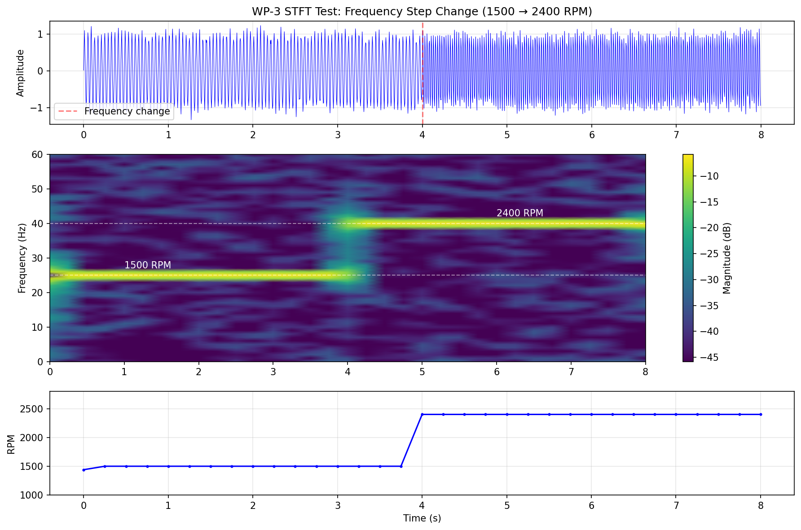
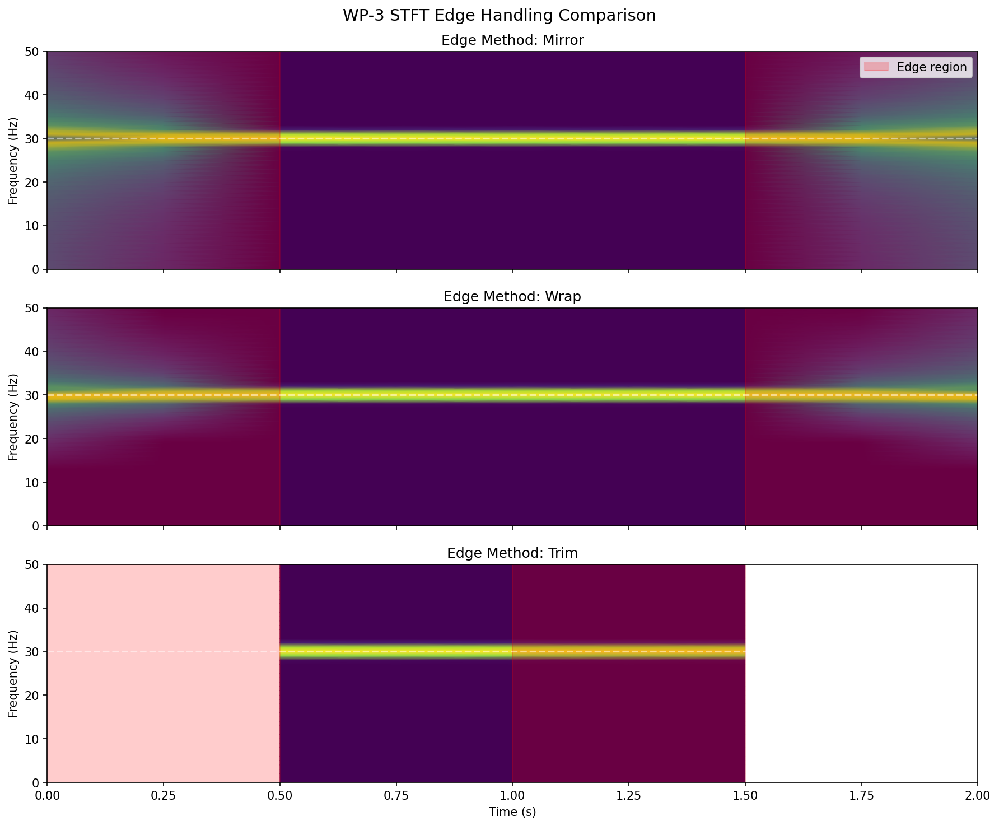
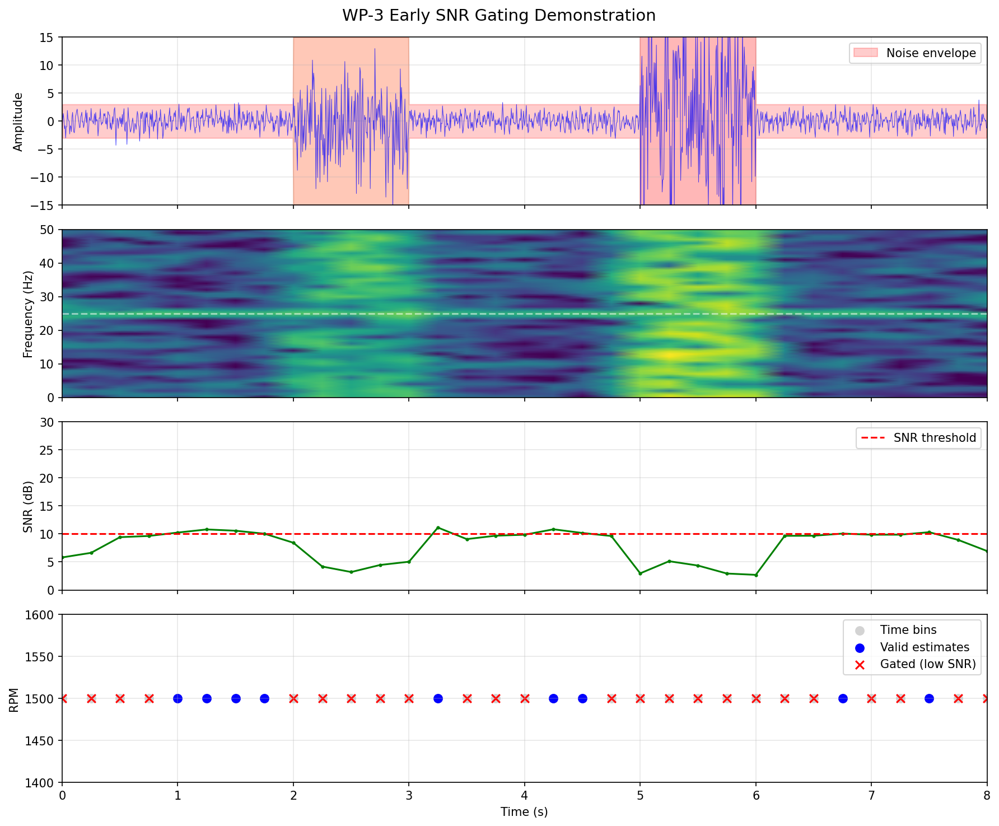
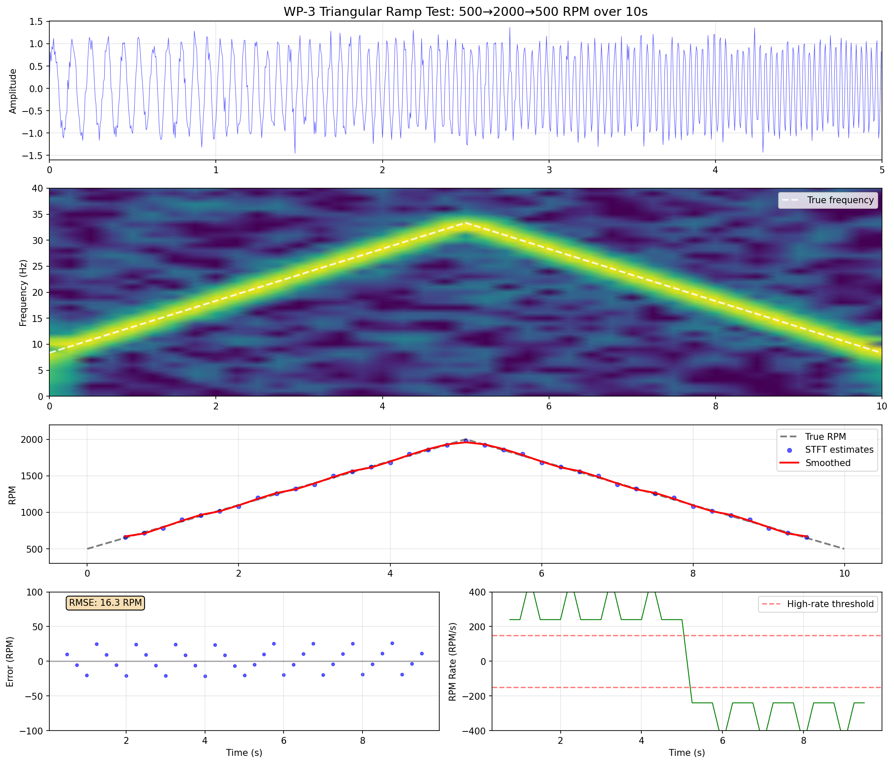
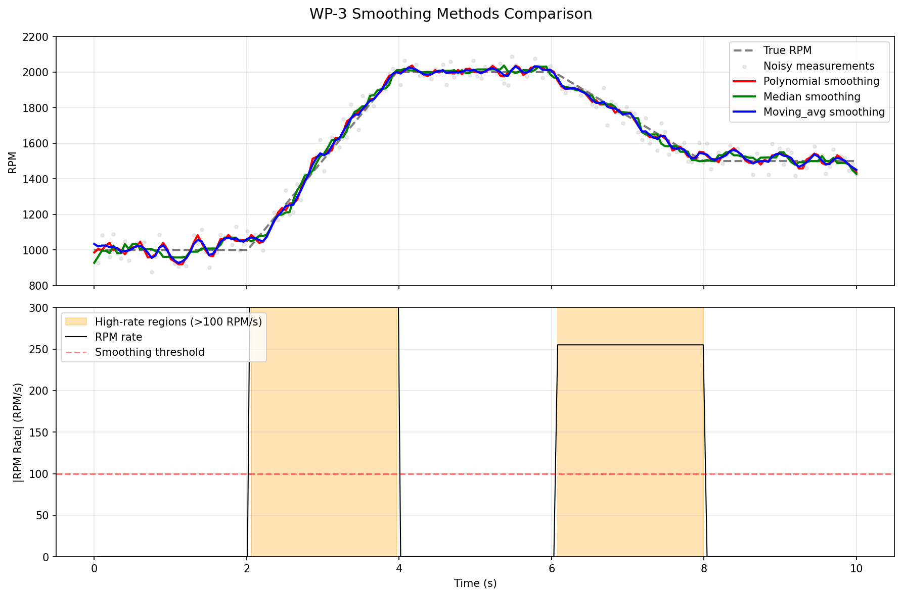
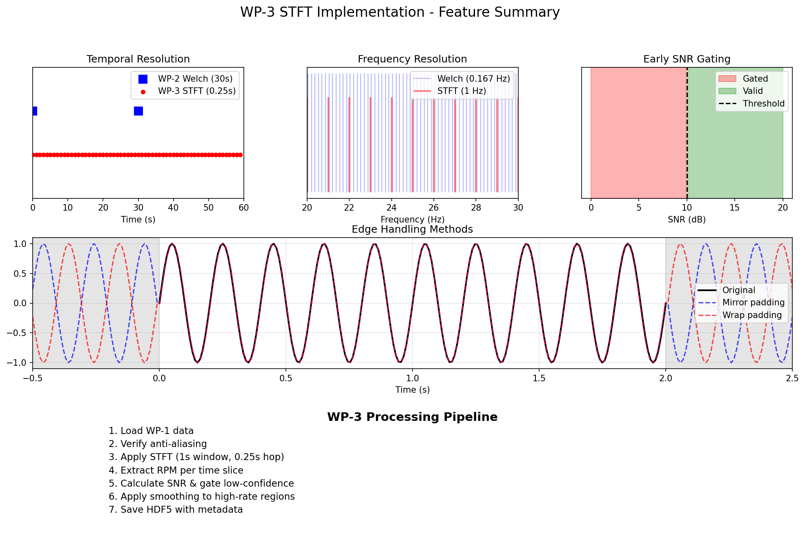

Demonstrates STFT tracking of frequency step change (1500 → 2400 RPM)

Shows different edge handling methods (mirror, wrap, trim)

Demonstrates early SNR gating removing low-confidence estimates

Key validation: 500→2000→500 RPM tracking over 10 seconds

Comparison of polynomial, median, and moving average smoothing

Overview of all WP-3 features and processing pipeline
